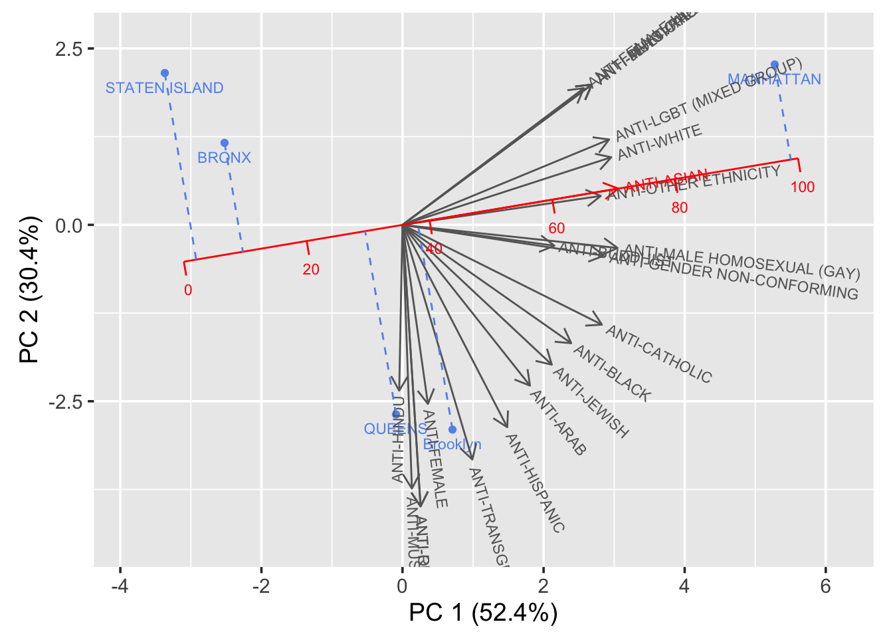
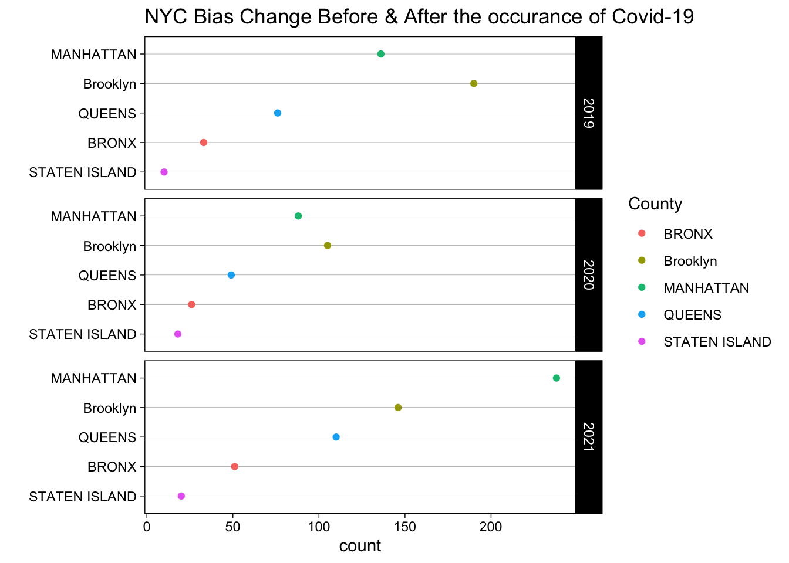

Chapter 5 Results
Notice: Most of the visualizations below are interactive in a way that more information can be obtained by pointing your cursor on the plots, also you are able to unselect a specific group (or groups) in the legend just by click on it.
The followings are the packages we used for making the visualizations in this section. Note that we only kept coding part that are related to making the graphics, please find out more about data manipulation here.
library(tidyverse)
library(tidyr)
library(readr)
library(ggplot2)
library(plotly)
library(dplyr)
library(lubridate)
library(devtools)
library(viridis)
library(zoo)
library(parcoords)
library(hrbrthemes)
library(gridExtra)
library(ggrepel)
library(redav)5.1 Covid-19 Progression in NYC
- First of all, let’s get a detailed understanding of how Covid has progressed in NYC since its first confirmed cases on March 1, 2020.
g <- ggplot(case_total_longer, aes(x = month_of_interest, y = case_total, fill = areas)) +
geom_bar(stat = "identity") +
scale_fill_viridis(discrete = TRUE, option = "D") +
scale_x_date(breaks = "1 month", date_labels = "%m-%Y") +
theme_bw() +
theme(axis.text.x = element_text(angle = 90),
plot.title = element_text(hjust = 0.5),panel.background = element_rect(fill = "white")) +
labs(y = "Number of Cases", x = "Month of Diagnosis", title = "Number of Cases Diagnosed by Boroughs") +
guides(fill=guide_legend(title="Boroughs"))
ggplotly(g)The first case of the COVID-19 pandemic in New York City was confirmed on March 1, 2020, by the end of April an approximate total of 174,000 cases were confirmed, arrived to the first peak, New York City had become the worst-affected area in the United States. Seven months later, around November 2020 starts inclining and second peak arrived on January 2021; third peak happened on December 2021. Later in our crime analysis, we will recall these time slots as reference of comparison.
- Besides case totals, let’s check out the number of hospitalized cases and death cases in NYC.
p <- ggplot(data_by_month_longer, aes(x = month_of_interest, y = number, group = types, fill = areas)) +
geom_bar(stat = "identity") +
scale_fill_viridis(discrete = TRUE, option = "D") +
scale_x_date(breaks = "1 month", date_labels = "%m-%Y") +
geom_hline(yintercept=0, color = "white", size = 0.15) +
theme_bw() +
theme(axis.text.x = element_text(angle = 90),
plot.title = element_text(hjust = 0.5),panel.background = element_rect(fill = "white")) +
labs(y = "Number of Hospitalized and Death Cases", x = "Month of Diagnosis", title = "Number of Hospitalized and Death Cases Diagnosed by Boroughs") +
guides(fill=guide_legend(title="Boroughs"))
ggplotly(p)The above diverging stacked bar chart shows the number of hospitalized cases and death Cases by boroughs since the fist confirmed case in NYC. Positive values represent the number of hospitalized cases, and negative values represent the number of death Cases. There were over a total of 14,800 deaths by the end of April since the fist case confirmed; In general, death cases and hospitalized cases are declined, after first dose of Covid-19 vaccine became available on December 14, 2020. Recall from the confirmed cases histogram plot above, even though the confirmed cases in the second peak and the third peak surpassed the first peak, death cases and hospitalized cases did not grow correspondingly. Vaccination might helped people not to get sever Covid-19 symptoms.
p <- ggplot(case_total_longer, aes(x = month_of_interest, y = case_total, group = areas, color = areas)) +
geom_line() +
scale_color_viridis(discrete = TRUE, option = "G") +
scale_x_date(breaks = "1 month", date_labels = "%m-%Y") +
theme_bw() +
theme(axis.text.x = element_text(angle = 90),
plot.title = element_text(hjust = 0.5),panel.background = element_rect(fill = "white")) +
labs(y = "Number of Cases", x = "Month of Diagnosis", title = "Number of Cases Diagnosed by Boroughs") +
guides(color=guide_legend(title="Borough"))
ggplotly(p)It is clear to observe that Brooklyn and Queens have roughly similar number of confirmed case from Feb 2020 to June 2021; later, from June 2021, confirmed cases in Brooklyn surpassed those in Queens, the highest number of confirmed cases among all five boroughs. However, we need to take the population in each borough into consideration. From Wikipedia, Brooklyn’s population (2020): 2,736,074; Queens’s population (2020): 2,405,464; Manhattan’s population (2020): 1,694,251; Bronx’s population (2020): 1,472,654; Staten Island’s population (2020): 495,747.
case_rate_longer <- data_by_month %>%
select(1:3)
case_rate_longer$population <- ifelse(case_rate_longer$areas == "BK", 2736074, ifelse(case_rate_longer$areas == "BX", 1472654, ifelse(case_rate_longer$areas == "MN", 1694251, ifelse(case_rate_longer$areas == "QN", 2405464, 495747))))
case_rate_longer <- case_rate_longer %>%
mutate(case_rate = (case_total/population)*100000) # per 100,000 people p <- ggplot(case_rate_longer, aes(x = month_of_interest, y = case_rate, group = areas, color = areas)) +
geom_line() +
scale_color_viridis(discrete = TRUE, option = "G") +
scale_x_date(breaks = "1 month", date_labels = "%m-%Y") +
theme_bw() +
theme(axis.text.x = element_text(angle = 90),
plot.title = element_text(hjust = 0.5),panel.background = element_rect(fill = "white")) +
labs(y = "Case Rates", x = "Month of Diagnosis", title = "Diagnosed Case Rate (per 100,000) by Boroughs") +
guides(color=guide_legend(title="Borough"))
ggplotly(p)Now, the line plot above is modified by population of each boroughs. Staten Island is leading instead of Brooklyn or Queens after first peak of Covid-19 exposure. However, for general audience the one without modifying would be more straightforward to look at.
p <- ggplot(data = breakthrough, aes(x = week_of_diagnosis, y = count, group = vacci_status, color = vacci_status)) +
geom_line() +
scale_color_viridis(discrete = TRUE, option = "D") +
scale_x_date(breaks = "1 week", date_labels = "%d-%b") +
theme_bw() +
theme(axis.text.x = element_text(angle = 90),
plot.title = element_text(hjust = 0.5, size = 12),panel.background = element_rect(fill = "white"))+
labs(y = "count", x = "Week of Diagnosis", title = "Number of Cases, Deaths, Hospitalized Diagnosed by Vaccination Status") +
guides(color=guide_legend(title="Vaccination Status")) +
facet_wrap(~cases, scales = "free")
ggplotly(p)%>%
layout(title = list(y = 0.97, xref = "plot"), margin=list(t = 75))The timeline of data for the above plot is starting a bit after when Covid-19 booster vaccine is available to the general public until most recent. Full-vaccinated is defined as vaccinated first two shots of Covid-19 vaccines and Covid-19 Booster; Un-boosted is defined as only toke first two shots of Covid-19 vaccines; Un-vaccinated is defined as no vaccination at all. Notice that the scale for ‘count’, y-axis, is not a common scale. (if we set it to be a common scale, for death count and hospitalized count, it would be hard to discover their trends with case count on the side.) Quite unexpected to discover that the number of confirmed cases diagnosed for fully vaccinated people is greater than those of the other two, followed by un-boosted, then un-vaccinated, which makes us wonder whether the vaccines indeed have an effect on Covid-19 prevention. However, we can observe a lower number of people who are fully vaccinated appear in death count and hospitalized count. Un-vaccinated people has relative higher number of cases in death and hospitalization. Similar as what is mentioned above, vaccination might not perfectly prevent people from getting Covid, instead, it helps people to not get the sever symptoms that causes hospitalization or even death.
p <- ggplot(data = breakthrough2, aes(x = week_of_diagnosis, y = rate, group = vacci_status, color = vacci_status)) +
geom_line() +
scale_color_viridis(discrete = TRUE, option = "D") +
scale_x_date(breaks = "1 week", date_labels = "%d-%b") +
theme_bw() +
theme(axis.text.x = element_text(angle = 90),
plot.title = element_text(hjust = 0.5, size = 12),panel.background = element_rect(fill = "white"))+
labs(y = "Rate", x = "Week of Diagnosis") +
ggtitle(paste("Rate of Cases, Deaths, Hospitalized Diagnosed <br>",
"per 100,000 people by Vaccination Status <br>", sep = "")) +
guides(color=guide_legend(title="Vaccination Status")) +
facet_wrap(~cases, scales = "free")
ggplotly(p) %>%
layout(title = list(y = 0.97, xref = "plot"), margin=list(t = 75))Now, we look at the rate of cases, deaths, and hospitalized diagnosed per 100,000 people by vaccination status. This makes more sense, un-vaccinated people has the highest case rate, death rate, and hospitalization rate. Fully vaccinated people still has higher case rate, however, lower death rate and lower hospitalization rate.
- We also used the Parallel Coordinate Plot to view the change of CASE_COUNT, PROBABLE_CASE_COUNT, HOSPITALIZED_COUNT, DEATH_COUNT by the five boroughs, the Bronx, Brooklyn, Manhattan, Queens, and Staten Island, in NYC.
parcoords(covid_data,
color = list(colorBy = "Date",
colorScale = "scaleOrdinal",
colorScheme = "schemeCategory10"),
rownames = FALSE,
brushMode = "2D-axes",
alpha = 0.3,
withD3 = TRUE,
width = 900,
height = 500)The line’s color is defined by different months in year 2020. It is quite clear that since Feb 2020 to Nov 2020, the probable case count in the SI, QN, MN, BX, BK are mostly around 5,000 and 10,000. The peak of the probable case count occurs in the Jan 2020 and Dec 2020. It makes sense that the probable case count and case count generally have a positive correlation. Meanwhile, it is also rational to see that for most cases, high case count are positive correlated with high hospitalized count and the variable hospitalized count has a general negative correlation with the death count. However, there is some abnormal trend: in Apr 2020, it has generally low sum of case count, but the high hospitalized count and the death count reaches the peak within the whole year. After Apr 2020, the case count generally decreases; hospitalized count remains at high values and death count drops significantly since then(The time coincides with the occurrence of COVID-19 flu shots).
5.2 Hate Crime Analysis in NYC After Covid Exposure
- We aggregated the data based on ‘Bias Type’, which consists of 22 types of bias in hate crime, and sorted the total number of cases in each type of bias. The following four types have the highest frequencies over the years.
## # A tibble: 4 × 2
## Bias bias_sum_count
## <chr> <dbl>
## 1 ANTI-JEWISH 592
## 2 ANTI-ASIAN 178
## 3 ANTI-MALE HOMOSEXUAL (GAY) 158
## 4 ANTI-BLACK 114p <- ggplot(hate_top_4, aes(x = month_of_interest, y = count, group = County, color = County)) +
geom_line() +
geom_point(size = 0.6) +
scale_color_viridis(discrete = TRUE, option = "G") +
scale_x_date(breaks = "2 month", date_labels = "%m-%Y") +
geom_vline(xintercept = as.numeric(as.Date(c('2020-03-01', '2020-04-01', '2021-01-01'))), size = 0.2, color = "red") +
theme_bw() +
theme(axis.text.x = element_text(size = 7, angle = 90),
plot.title = element_text(hjust = 0.5),panel.background = element_rect(fill = "white")) +
labs(y = "Number of Cases", x = "Month of Statement", title = "Number of Hate Crimes towards Anti-Asian by Boroughs") +
guides(color=guide_legend(title="Borough")) +
facet_wrap(~Bias)
ggplotly(p)Among all discrimination, most four discrimination toward races and sexual orientations over the years from Jan 2019 to Dec 2021 are anti-Jewish (total of 130 cases), anti-Black (total of 78 cases), anti-Male Homosexual (total of 75 cases), and anti-Asian (total of 51 cases). Three red lines presenting in the above plots representing first case confirmed month in NYC, first peak in April 2020, and second peak Jan 2021.
Anti-Black and Anti-Male Homosexual discrimination are relative stable over the years, Anti-Jewish is fluctuated since Jan 2019, seems to have no pattern and no relation with Covid-19, except that between first peak and second peak of Covid exposure, discrimination towards Jewish got a bot eased off. However, Anti-Asian discrimination events only happened 3 times before first case of Covid-19 is confirmed in NYC. After Covid, we heard from the news and elsewhere about how Covid is started from Asian, which might still in debate. On the month of first case confirmed in NYC, discrimination towards Asian instantly rise to the first peak when Covid first hit NYC, with 1 discrimination event happened in Queens, 4 in Brooklyn, 6 in Manhattan; More significantly, around Jan 2021, when Covid cases are at its peak, the second round of Asian Hate Crime surge to an unprecedented record high. And by location, we can see that Manhattan has the highest occurrences of hate crimes towards Asian.
- After grouping the original crime dataset by County variable and using the pivot_wider data transformation over the Bias variable, we calculate the total sum of bias counts in each region to figure out NYC bias toward various minority group of people by five boroughs over the years.
draw_biplot(hate_data,"ANTI-ASIAN")
- Based on the result of our PCA analysis, the vectors in the biplot are the indicators and the points refers to the five boroughs in NYC. ANTI-ASIAN variable is calibrated as our whole analysis focuses on the COVID-19 effects on the number of crimes and the overall influence over the people, especially those minority groups shown in the graph. The order of severity of bias on Asian people in NYC is learnt to be SI, BX, QN, BK and MN(order from low to high). Meanwhile, most bias variables are positive correlated with the ANTI-ASIAN variable.
ggplot(cleveland_data, aes(x = count, y = reorder(County, count),color = County)) +
geom_point() +
facet_grid(year ~ ., scales = "free_y", space = "free_y") +
ggtitle('NYC Bias Change Before & After the occurance of Covid-19') +
xlab("count") +
ylab('') +
theme_linedraw() +
theme(panel.grid.major.x = element_blank(), panel.grid.minor.x = element_blank())
- In the Cleveland dot plot, we use County and Year as two facets to draw the total sum of all kinds of biases over MN, BK, QN, BX and SI in NYC. It is not hard to tell that based on the plot, the overall trend of the total number of biases over the five counties decrease first from 2019 to 2020 and increase a lot from 2020 to 2021. It is quite rational as the COVID-19 makes its first appearance in 2020, but most people have to quarantine at home. After that, when it comes to 2021, the popularity of flu shots bring most people back to normal life and the counts of biases rise a lot since the COVID-19. It is not hard to tell that the COVID-19 does have influence over people’s behavior and can driven the increase of crimes(bias in our study).
p <- bubble_data %>%
mutate(pop=round(count,2)) %>%
arrange(desc(pop)) %>%
mutate(text = paste("Date: ", Date, "\nBias: ", Bias, "\nCount: ", count, sep="")) %>%
ggplot(aes(x=Date, y=count, size = pop, color = Bias, text=text)) +
geom_point(alpha=0.4) +
scale_size(range = c(1, 20), name="count") +
scale_color_viridis(discrete=TRUE, guide=FALSE) +
ggtitle("Different Bias counts in NYC from 2019 to 2021") +
theme_ipsum() +
theme(legend.position="none") +
theme(axis.text.x = element_text(angle = 90)) +
theme(
panel.grid.major.y = element_blank(),
panel.grid.major.x = element_blank()
)
ggplotly(p, tooltip="text")- The bubble plot is also interactive and can show us the counts over different biases in NYC wide since Jan 2019 to Dec 2021. The size and color of bubbles in the plot are defined by the count of biases and the group of biases. It it quite obvious that the general trend of counts of different biases in NYC decreases at first, and then increases a lot. The result provides consistent findings like the Cleveland dot plot with facets, COVID-19 does have influence over the number of biases in NYC, that the general pattern of the counts of different biases increases a lot after its appearance.
5.3 Shooting Incidences Analysis in NYC After Covid Exposure
overall <- shooting_all_overall %>% ggplot(aes(x = OCCUR_YM, y = count, group = BORO, color = BORO)) +
geom_line()+
scale_color_viridis(discrete = TRUE, option = "G") +
scale_x_date(breaks = "1 year", date_labels = "%b-%y") +
labs(y = "Number of Shooting Occurred", x = "Date", title = "NYC Shooting Occurrence Since 2006") +
geom_vline(xintercept = as.numeric(as.Date(c('2020-03-01', '2020-04-01', '2021-01-01'))), size = 0.2, color = "red") +
guides(color=guide_legend(title="Location")) +
theme_bw() +
theme(axis.text.x = element_text(angle = 45),
axis.text.y = element_text(angle = 45),
plot.title = element_text(hjust = 0.5),panel.background = element_rect(fill = "white"))
overall_shooting <- ggplotly(overall, width = 800)
overall_shootingLook more closely during the covid period: The first case of the COVID-19 pandemic in New York City was confirmed on March 1, 2020. Three red lines presenting in the above plots representing first case confirmed month in NYC, first peak in April 2020, and second peak Jan 2021.
covid <- shooting_all_covid %>% ggplot(aes(x = OCCUR_YM, y = count, group = BORO, color = BORO)) +
geom_line()+
scale_color_viridis(discrete = TRUE, option = "G") +
scale_x_date(breaks = "1 month", date_labels = "%b-%y") +
labs(y = "Number of Shooting Occurred", x = "Date", title = "NYC Shooting Occurrence During Covid") +
guides(color=guide_legend(title="Location")) +
geom_vline(xintercept = as.numeric(as.Date(c('2020-03-01', '2020-04-01', '2021-01-01'))), size = 0.2, color = "red") +
theme_bw() +
theme(axis.text.x = element_text(angle = 45),
axis.text.y = element_text(angle = 45),
plot.title = element_text(hjust = 0.5),panel.background = element_rect(fill = "white"))
covid_shooting <- ggplotly(covid, width = 800)
covid_shootingIn the next interactive section we will make a geographical heat map using the number of shootings by modified zip code, and arranged by month since March 1, 2020. We will demonstrate more detailed analysis in the interactive section.